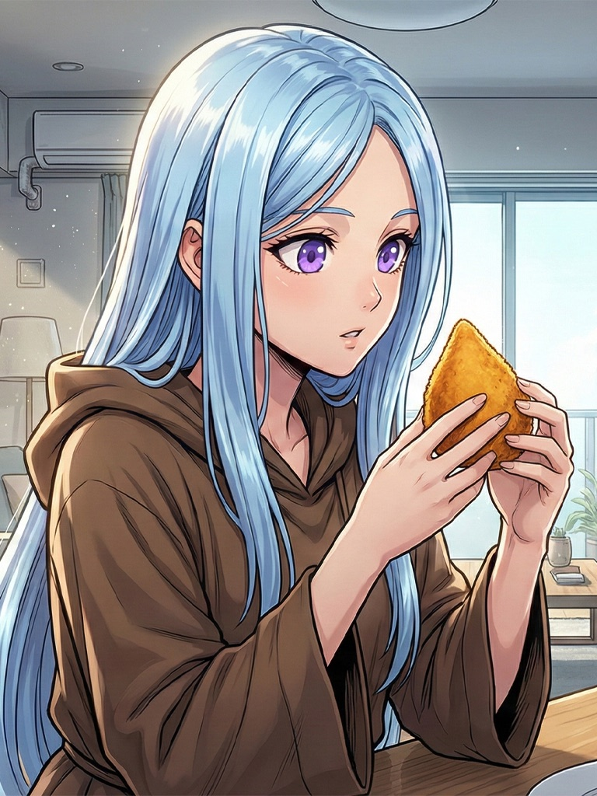

Gaia
Gaia Helena Allamirah
- Idade
- Alguns milhares de anos.
- Ocupação
- Atual deusa suprema e sommelier de coxinha.
- Adora
- Comer. Também gosta de atuar, experimentar pratos regionais, tocar instrumentos de sopro e comer alimentos de baixíssimo valor nutricional.
- Detesta
- Levar sustos e ficar longos momentos sozinha com suas lembranças.